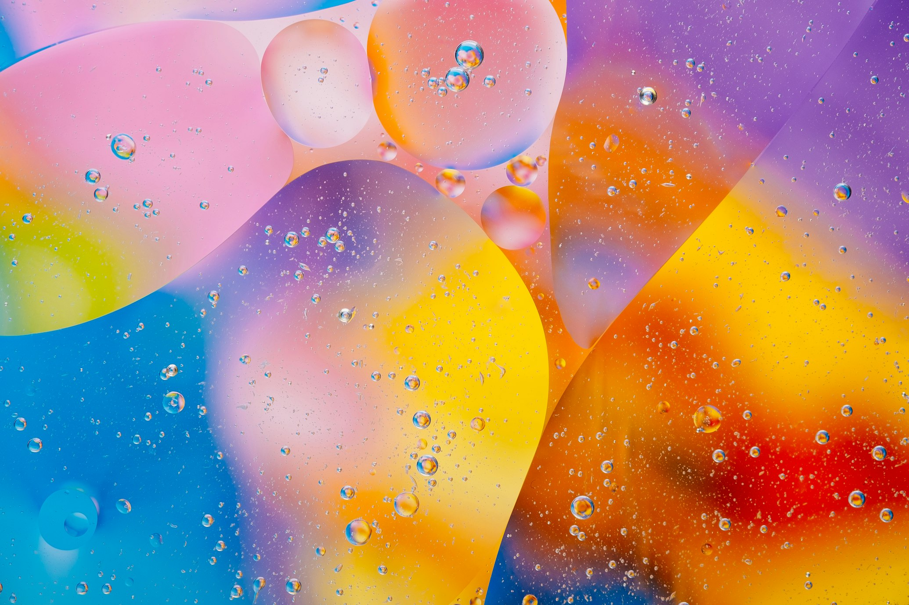

Case Studies
Real-world applications of intelligence.
OpenClaw MailBot
Autonomous multi-account email assistant that summarizes, cleans, and responds using agentic LLM logic.
OpenRouter Python Agents
VitalSync AI
A sophisticated health intelligence platform that processes real-time biometric data from wearables to predict recovery cycles and optimize physical performance using LSTM neural networks.
Predictive Analytics LSTM HealthTech Bio-Signal Processing
CareerOps Agent
End-to-end autonomous pipeline for Biotech applications, handling everything from scanning to ATS-optimized submissions.
LLM Automation ATS-Ready
NeuralCanvas Studio
Generative design suite for creating high-value Victorian Noir and Celestial assets using custom Diffusion models.
Generative AI Design Diffusion